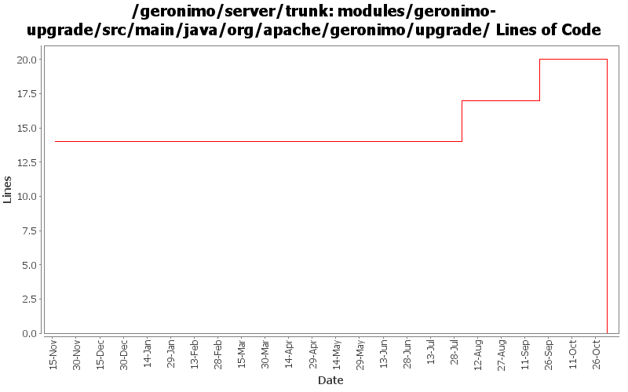

[root]/modules/geronimo-upgrade/src/main/java/org/apache/geronimo/upgrade

| Author | Changes | Lines of Code | Lines per Change |
|---|---|---|---|
| Totals | 12 (100.0%) | 43 (100.0%) | 3.5 |
| djencks | 2 (16.7%) | 20 (46.5%) | 10.0 |
| vamsic007 | 1 (8.3%) | 18 (41.9%) | 18.0 |
| akulshreshtha | 2 (16.7%) | 4 (9.3%) | 2.0 |
| rickmcguire | 1 (8.3%) | 1 (2.3%) | 1.0 |
| prasad | 2 (16.7%) | 0 (0.0%) | 0.0 |
| kevan | 4 (33.3%) | 0 (0.0%) | 0.0 |
GERONIMO-3565. Modules distributed amongst framework/modules and plugins
0 lines of code changed in 2 files:
GERONIMO-2964 Cannot specify the Tomcat work directory for a web application
o Renamed the schemas that changed
18 lines of code changed in 1 file:
GERONIMO-2286 GERONIMO-1874 GERONIMO-3140 Adjust schema versions for schemas importing new schema versions
14 lines of code changed in 1 file:
GERONIMO-2286 GERONIMO-1874 GERONIMO-3140 Use patterns for external-rar in app client plans and external-path in ear plan external modules. Allow partial artifacts and use an ArtifactResolver to fill in the missing bits. Use client_artifact_aliases.properties in the app client builder to help avoid using server side modules when client side modules are intended for runtime. This is not backward compatible for apps using external-rar or external-path.
6 lines of code changed in 1 file:
GERONIMO-3246 Cleanup exception handling so stack traces for first failures are not discarded.
1 lines of code changed in 1 file:
GERONIMO-2607 reverted 485524
2 lines of code changed in 1 file:
GERGERONIMO-2607 Updated all GBeans to use new GBeanInfoBuilder.addOperation(..) method
2 lines of code changed in 1 file:
GERONIMO-2537 Update the src headers in server/trunk/modules to be compliant with the new ASF src header and copyright policy (http://www.apache.org/legal/src-headers.html). I also did some cleanup of the src headers and tried to make them all a consistent format
0 lines of code changed in 4 files: